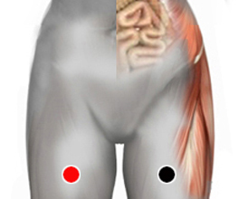

Trastornos del lenguaje
cuadriceps - cuadriceps
cabeza de páncreas - vejiga
occipital - bulbo
occipital - temporal
seno frontal (I) - riñón (I)
polo - calcaneo
polo - polo
biceps - biceps

Generalidades:
Probar éste par en trastornos de lenguaje que pueden abarcar distintos aspectos como:
En niños los trastornos más comunes pueden ser tartamudez o disfemia, dislexia, trastorno mixto receptivo-expresivo, disfacia, dislexia, afasia. La detección y corrección oportuna de estos trastornos les permiten a los menores un mejor desarrollo en las áreas académicas, de socialización, expresión, etcétera.
Causas:
Los problemas de lenguaje pueden estar asociados con discapacidad intelectual (retraso mental). Cuando se presentan expontáneamente en edad adulta puede deberse a trastornos cerebrales provocados por traumatismo (golpes) o accidentes cerebrovasculares.